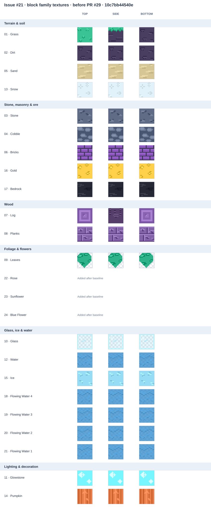

Static, offline-only comparison using Storybook seed 1337. The automated contact sheets show the complete non-air block inventory; the game screenshots below provide a separate, limited gameplay-distance check.
Before · PR #27 scene with existing textures
After · PR #29 material textures with the PR #27 Storybook scene
Scene source: a66121c35895b6e716cfe150b16f5197f9f4f3b8
Material source: PR #29 head 5a1bb7401bfc977461e8f992092a3343359590c8 · seed 1337
Captured in the same Codex in-app desktop browser at 1280 × 720 after resetting both pages to the same seed and view. Gameplay and temporary block samples were held only in each page’s memory; they were not saved or sent over the network.
Baseline texture source: 10c7bb44540e83dc54c062b4ba855183fb1c5eef (blocks 1–21).

Current sheet covers all non-air blocks 1–24. Blocks 22–24 were added after the baseline.
No bounded texture edit was justified by this sample: the tested gold and Glowstone were distinguishable, while the unobserved materials and lighting states need evidence before palette changes can be judged.
Automated checks: 234 passed across 23 suites, including block coverage, save behavior, performance regressions, and sanitized offline QA output. Independent contact-sheet review passed.
Browser sample in the same desktop in-app browser (hardware/GPU unavailable): before 1.7 FPS, p95 frame time 1016.2 ms, heap 21.8 MiB; after 5.3 FPS, 1007.3 ms, heap 22.6 MiB. The session was heavily throttled; these readings do not establish acceptable device performance.
Issue #21 is not accepted. Glass and ice gameplay-distance evidence, daylight/warm-sunset comparison, and a valid performance sample remain outstanding.
Contact sheets document texture inventory; they do not prove in-game readability.